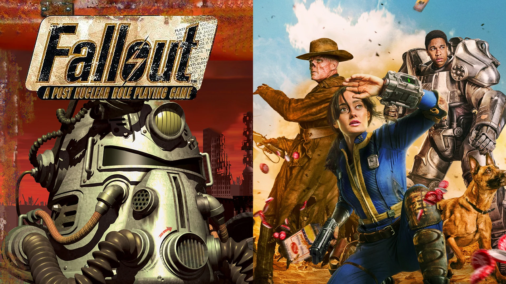

El Éxito de 'Fallout': Ventas en Auge Gracias a la Serie
Pc y Consola
Desde que 'Fallout' estrenó su primera temporada el pasado 11 de abril, la serie basada en el videojuego homónimo ha sido todo un éxito. Prueba de ello ha sido el aumento de ventas del videojuego en un 7,500% en tan solo una semana en Europa, lo que lo ha disparado a lo más alto de las listas de ventas, según los datos de GSD.
Gracias al éxito de la serie, su videojuego homónimo ha disparado sus ventas en Europa y ha cuadriplicado el número de jugadores en activo. 'Fallout' renueva por una segunda temporada tras su...
Conocer MásParadox otra vez con más DLC!
Llega el DLC “The Machine Age” A Stellaris
Desde su lanzamiento, 'Stellaris' ha sido un juego que ha recibido numerosas expansiones y contenido adicional. Sin embargo, algunos jugadores han expresado su preocupación por la cantidad de DLCs que Paradox Interactive sigue lanzando
Con la llegada de 'The Machine Age', los jugadores se sumergirán en una era de maravillas tecnológicas y mejoras sintéticas. Pero, ¿es este DLC necesario o simplemente parte de una estrategia de monetización? Algunos argumentan que Paradox debería centrarse más en mejorar el juego base y ofrecer actualizaciones gratuitas en lugar de seguir lanzando expansiones de pago...
Conocer Más